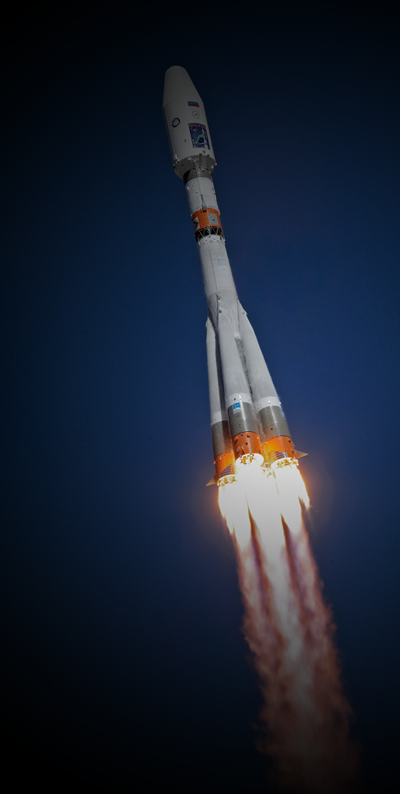

A Braverso é a única empresa terceirizada potiguar que presta serviços aeroespaciais com o intuito de fomentar os estudos físicos da região e a competitividade brasileira no mercado de viagens espaciais. Está sediada em Natal, Rio Grande do Norte, e é parceira de institutos e instituições próximas, como o Instituto Federal do Rio Grande do Norte e a Universidade Federal do Rio Grande do Norte.BRAVERSO: Liderando o Futuro da Exploração Espacial Brasileira
A BRAVERSO é a empresa que redefiniu o setor aeroespacial no Brasil, estabelecendo um novo padrão de inovação, tecnologia e ambição na corrida espacial. Fundada com a missão de tornar o Brasil um ator relevante na exploração do espaço profundo, a BRAVERSO rapidamente conquistou seu espaço no cenário internacional, desenvolvendo soluções de ponta para exploração interplanetária, satélites de última geração e sistemas de propulsão avançados.
Com um compromisso inabalável com a excelência, a empresa investe fortemente em pesquisa e desenvolvimento, engenharia de precisão e parcerias estratégicas com as maiores agências espaciais do mundo. Seu diferencial competitivo se dá não apenas pela inovação tecnológica, mas também por sua abordagem sustentável e pelo desenvolvimento de infraestrutura espacial própria, tornando-se a primeira organização privada brasileira a construir e operar bases de lançamento nacionais e internacionais.
Inovação e Tecnologia: O Coração da BRAVERSO
A BRAVERSO tem como princípio a criação de tecnologia proprietária, reduzindo a dependência de soluções estrangeiras e fortalecendo a soberania tecnológica brasileira no setor espacial. Entre suas principais inovações estão:
Propulsão Avançada: Desenvolvimento de motores iônicos e sistemas de propulsão a plasma para missões de longa duração e exploração do espaço profundo.
Satélites Inteligentes: Equipados com inteligência artificial para otimizar a coleta e análise de dados, melhorando aplicações em comunicação, segurança e monitoramento ambiental.
Bases de Lançamento Próprias: Infraestrutura nacional e parcerias internacionais permitem à BRAVERSO realizar missões sem depender de terceiros, reduzindo custos e aumentando a frequência de lançamentos.
Exploração Sustentável: Estratégias para a reutilização de veículos lançadores, mitigação de detritos espaciais e mineração responsável de corpos celestes.
Impacto no Setor Espacial e na Economia Brasileira
O avanço da BRAVERSO não se limita ao espaço sideral; seu impacto é sentido diretamente na economia e no desenvolvimento científico do Brasil. A empresa impulsionou a criação de um ecossistema aeroespacial robusto, atraindo investimentos estrangeiros, fomentando startups do setor e incentivando a formação de novas gerações de engenheiros e cientistas espaciais.
Além disso, a BRAVERSO tem contribuído significativamente para o setor de segurança e defesa nacional, desenvolvendo satélites de monitoramento terrestre e tecnologias estratégicas para comunicação segura. Seu compromisso com a inovação não apenas fortalece a posição do Brasil no cenário espacial, mas também impulsiona setores correlatos, como telecomunicações, geolocalização e meteorologia.
Reconhecimentos e Conquistas Internacionais
A reputação da BRAVERSO no mercado global se reflete em diversas premiações e certificações internacionais, consolidando sua posição como uma das empresas mais inovadoras do setor espacial. Entre seus principais reconhecimentos, destacam-se:
Prêmio de Excelência em Engenharia Espacial, concedido pela Federação Internacional de Astronáutica, pelo desenvolvimento de sistemas de propulsão inovadores.
Certificação Internacional de Segurança Aeroespacial, garantindo a confiabilidade de seus veículos lançadores e módulos orbitais.
Parcerias com Agências Espaciais de Prestígio, incluindo colaborações com NASA, ESA e outras instituições de ponta para missões conjuntas de exploração e pesquisa científica.
Visão para o Futuro
A BRAVERSO não apenas acompanha as tendências da indústria aeroespacial — ela as define. Entre seus projetos futuros, destacam-se:
Colonização Lunar: Desenvolvimento de infraestrutura para habitação e extração de recursos na Lua, viabilizando uma presença humana contínua no satélite natural da Terra.
Missões a Exoplanetas: Estudos para o envio de sondas avançadas a sistemas estelares vizinhos, em busca de planetas habitáveis.
Estação Orbital Brasileira: Um projeto visionário para estabelecer a primeira estação espacial brasileira, promovendo pesquisas em microgravidade e ampliando o acesso do país ao espaço profundo.
Conclusão
A BRAVERSO é mais do que uma empresa aeroespacial — é um símbolo do potencial ilimitado da inovação brasileira. Com sua capacidade de transformar desafios em conquistas, a empresa está pavimentando o caminho para um futuro onde o Brasil não apenas participa da corrida espacial, mas lidera sua própria jornada rumo às estrelas. 🚀🌍✨